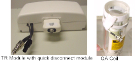
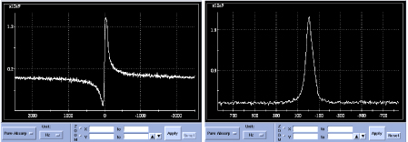
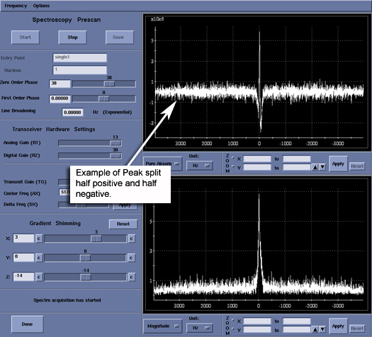
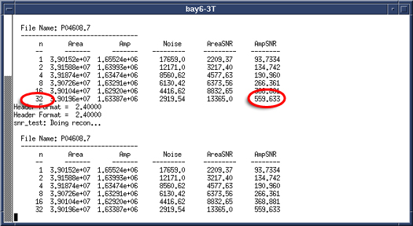
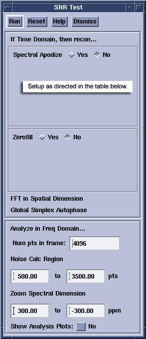
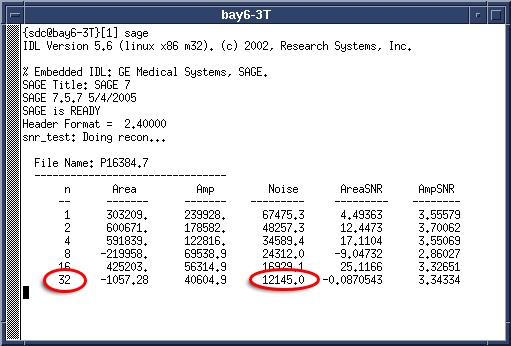
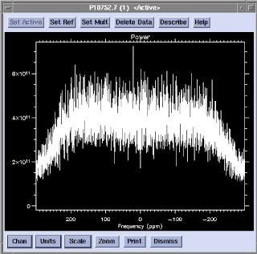
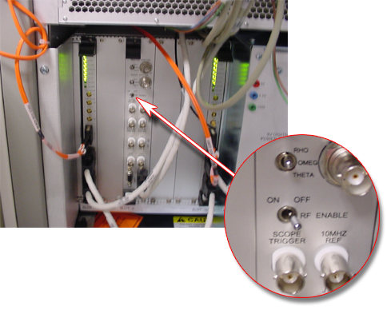

- 00000018WIA30B02E20GYZ
- id_131074623.0
- Aug 29, 2019 1:40:32 AM
Multi Nuclear Spectroscopy (MNS) Functional Checks
Prerequisites
| Required persons | Preliminary requirements | Procedure | Finalization |
|---|---|---|---|
| 1 | Not Applicable | 45 minutes | Not Applicable |
| Item | Quantity | Effectivity | Part number | Manufacturer |
|---|---|---|---|---|
| 13C 1.5T | 1 | - |
2354050-3 - TR Module 5114403 - QA Probe | - |
| 13C 3.0T | 1 | - |
2354050-6 - TR Module 5114403-3 - QA Probe | - |
| 31P 1.5T | 1 | - |
2354050-2 - TR Module 5114403-2 - QA Probe | - |
| 31P 3.0T | 1 | - |
2354050 - TR Module 5114403-4 - QA Probe | - |
| 9-hole USS and Grafidy base plate | 1 | - |
46-271410 | - |
| Condition | Reference | Effectivity |
|---|---|---|
|
MNS option installed and amplifier calibrated. | - | |
|
MNS TR module and QA coil. | - | - |
About this task
The tests in this section are used to verify the operation of the Multi Nuclear Spectroscopy (MNS) subsystem. All the tests utilize a TR module and Quality Assurance (QA) probe for the nucleus under test (e.g. 13C or 31P). The tests are run in the same manner regardless of field strength or nucleus, therefore this single set of instructions will cover both 13C and 31P nuclei on 1.5T and 3.0T systems.
| Nucleus | Field Strength | Min MagAt TG = 0 | Min. SNR | Max NoiseStdev |
| 13C | 1.5T | 1.0 x10e8 | 40 | 33000 |
| 31P | 1.5T | 2.0 x10e8 | 120 | 33000 |
| 13C | 3.0T | 1.0 x10e9 | 120 | 33000 |
| 31P | 3.0T | 1.0 x10e9 | 280 | 33000 |

Hardware Setup
Procedure
Scanner Setup
Procedure
- Right-click on Research Options and select Download
Figure 3. CV Display Example pw_rf1 
Signal-to-Noise Test
Procedure
- Hardware Setup
- Install the TR module onto the top of the LPCA cover
- Connect the transmit (thick) and receive (thin) cables to the connectors on the LPCA cover.
- Place the Grafidy base plate on the patient bed near the top of the bed.
- Place the QA probe in the center hole of the Grafidy plate and lock into place.
- Connect the QA probe cable to the quick disconnect module.
- Connect the QD module to the TR module.
- Landmark on the center of the QA probe and advance to scan.
- Scanner Setup
- Start a new exam.
- Enter geserviceEnter for Patient ID.
- Enter MNS SetupEnter for Patient Name.
- Enter 111Enter for Patient Weight.
- From the Service->Other protocols choose MNS Setup.
- Select the SNR Test series for the nucleus under test and click Accept.
- Landmark on the center of the QA probe, if not already completed during Hardware Setup.
- Click Save Series.
- Right-click on Research Options and select Display CVs.
- Set the following CVs:
-
flip_rf1 = 10, press Enter
-
pw_rf1 = 40, press Enter
-
xmtaddSCAN = 200, press Enter
-
- Click Accept.
- Right-click on Research Options and select Download.
- Click Spectro Prescan.
- Slide R1 and R1 to the maximum position.
- Set TG(Transmit Gain) to 0 (zero).
- Set the top display mode to Magnitude.
- Click Start. After a few seconds you should see a peak in the top display and a free induction decay (FID) in the bottom display.
- Adjust the center frequency to center the peak in the Magnitude window.
- Change the display mode in the top window to Pure Absorp. The shape of the peak will change with some of the signal dipping below zero. The distortion will vary depending on QA coil and scanner.
- Use the Zero Order Phase control to adjust
the shape of the peak until it is fully positive and symmetric as
shown in Figure 6.
Figure 6. Typical uncorrected (left) and corrected (right) Pure Absorp. 31P peak shape. The Zero Order Phase control was used to correct the spectrum until all signal was positive and the peak shape was symmetric. 
- Increase TG by units of 10 until the peak decreases and becomes slightly negative, about -180.
- Decrease TG slowly until the peak is
split half-positive and half-negative. See Figure 7.
Figure 7. Example of Half-Positive and Half-Negative 
- Record this null value for TG.
- Subtract 60 units from the null TG value and set TG to this value. Now the peak will be positive again and at maximum amplitude.
- Click Stop and then Done.
- Scanning and Analysis
- Click Scan to collect the SNR data.
- Switch to the Tools Workspace and open a Command Window.
- Type sageEnter to
initiate the SAGE spectroscopy analysis tool. See Figure 8.
Figure 8. Example of Sage Tool 
- Click File->Load->Rawdata to open the load raw data dialog window. See Figure 9.
- When the scan is finished click Update List to refresh the list of P files to choose from.
See Figure 9.
Figure 9. Example of Raw Load Window 
- The top-most P file is the latest. Select this file and click Load. See Figure 9.
- In the main SAGE panel, select Macros->Func Tests->SNR Test…. See Figure 10.
- Move the windows around if necessary.
Figure 10. SNR Test Window 
- Setup the SNR Test window as listed in Table 5 for the nucleus under test.
Table 5. SNR Test Panel settings for 13C and 31P SNR tests. Field 13 C Setting 31 P Setting Spectral Apodize YES NO Function: Exponential LB 2.5 Hz Line Shaping NO Zero Fill NO NO Num pts in frame 4096 4096 Noise Calc Region 500 to 1500 500 to 1500 Zoom Spectral Dimension 50 to –50 ppm 50 to –50 ppm Show Analysis Plots NO NO - Click Run on the SNR Test window. The
SNR will be calculated for the active data set and reported in the
command window where SAGE was started.
Figure 11. Example of Data Set 
- Record the n=32 value for peak SNR (AmpSNR). Compare to the minimum acceptable value in Table 4.
Noise Test
Procedure
- Hardware Setup
- Install the TR module onto the top of the LPCA cover.
- Connect the transmit (thick) and receive (thin) cables to the connectors on the LPCA cover.
- Place the Grafidy base plate on the patient bed near the top of the bed.
- Place the QA probe in the center hole of the Grafidy plate and lock into place.
- Connect the QA probe cable to the quick disconnect module.
- Connect the QD module to the TR module.
- Landmark on the center of the QA probe and advance to scan.
- Scanner Setup
- Start a new exam, click New Patient.
- Enter geserviceEnter for Patient ID.
- Enter MNS Setup for Patient Name.
- Enter 111Enter for Patient Weight.
- From the Service->Other protocols choose MNS Setup.
- Select the Noise Scan series for the nucleus under test and click Accept.
- Landmark on the center of the QA probe, if not already completed during Hardware Setup.
- Click Save Series.
- Right-click on Research Options and select Display CVs.
- Set CV ia_rf1 = 0 and then click Accept.
- Right-click on [Research Options] and select [Download]
- Click Spectro Prescan.
- Slide R1 and R1 to the maximum position.
- Set TG to 0 (zero).
- Disable the RF switch at the systems cabinet. See Figure 12.
Figure 12. RF Switch Disabled 
- Set the top display mode to Power.
- Click Start. After a few seconds you
should see a band of noise across the power spectrum as shown in Figure 13.
Figure 13. Noise Test Power Spectrum In Spectro Prescan. There Should Be No Distinct Broad Peaks Across The Spectrum. The Noise Intensity Should Taper Off Near The Edges. 
- The tops of the noise should be about even across the window without any peaks. Peaks in the power spectrum may indicate a source of noise in the scan room.
- Click Stop and then Done.
- Scanning and Analysis
- Click Scan to collect the Noise data.
- Switch to the Tools Workspace and open a Command Window.
- Type sageEnter to
initiate the SAGE spectroscopy analysis tool. See Figure 14.
Figure 14. Sage Window - Click File->Load->Rawdata to open the load raw data dialog
window. See Figure 15.
Figure 15. Raw Data Load Window 
- When the scan is finished click Update List to refresh the list of P files to choose from. See Figure 15.
- The top-most P file is the latest. Select this file and click Load.
- In the main SAGE panel, select Macros->Func Tests->SNR Test…
- Move the windows around if necessary.
- Setup the SNR Test window as listed in Table 6 for the nucleus under test.
Figure 16. SNR Test Window 
Table 6. SNR Test Panel Settings For Noise Tests Field 13 C Setting 31 P Setting Spectral Apodize NO NO Zero Fill NO NO Num pts in frame 4096 4096 Noise Calc Region 500 to 3500 500 to 3500 Zoom Spectral Dimension 240 to –240 ppm (1.5T) 150 to –150 ppm (1.5T) 480 to –480 ppm (3.0T) 300 to –300 ppm (3.0T) Show Analysis Plots NO NO - Click Run on the SNR Test window. The noise will be calculated for the active data set and reported in the command window where SAGE was started.
- Record the n=32 value for Noise. Compare
to the maximum acceptable value in Table 4.
Figure 17. Example of Noise Data 
- In the spectrum window, select Chan->Power.
- The spectrum should be flat across the window with tapering
to zero at each edge as shown in Figure 18. Broad peaks in this window suggest unwanted noise
in the scan room. Use this test as a tool for tracking down noise
sources if found.
Figure 18. Noise test power spectrum following calculations in SAGE. There should be no distinct broad peaks across the spectrum. The noise intensity should taper off near the edges. 
- To zoom out and see the full spectrum, click Zoom, then right click in the window and select Unzoom. Right click again and click Quit to exit the zoom control.
- Enable the RF Switch at the systems cabinet. See Figure 19.
Figure 19. RF Switch Enabled 
Finalization
Procedure
- Remove any hardware used during system testing.
- Do a test scan of the system to ensure proper operation.